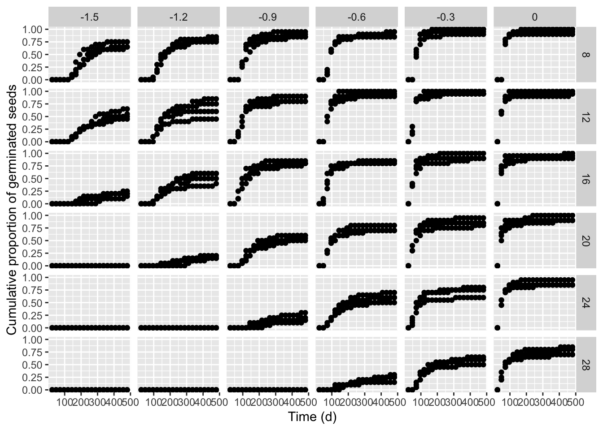
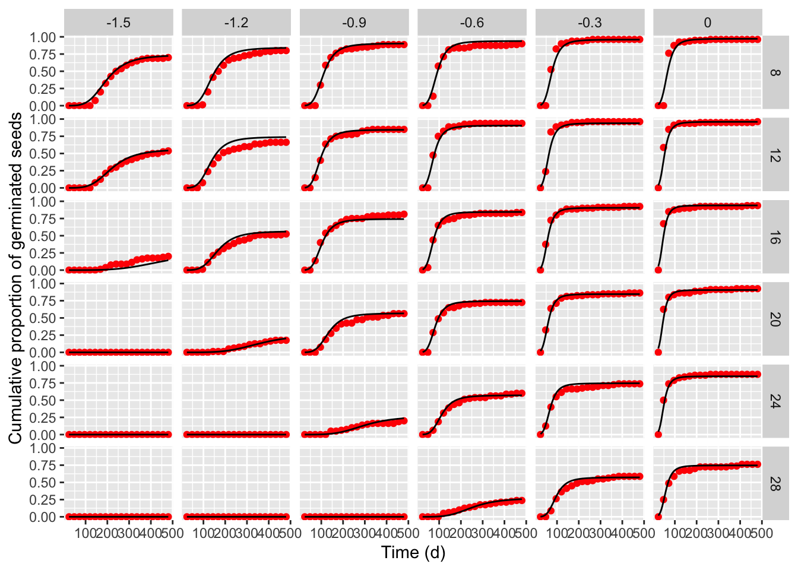
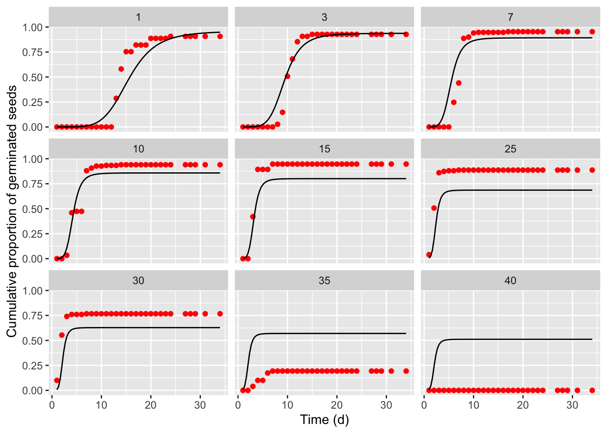
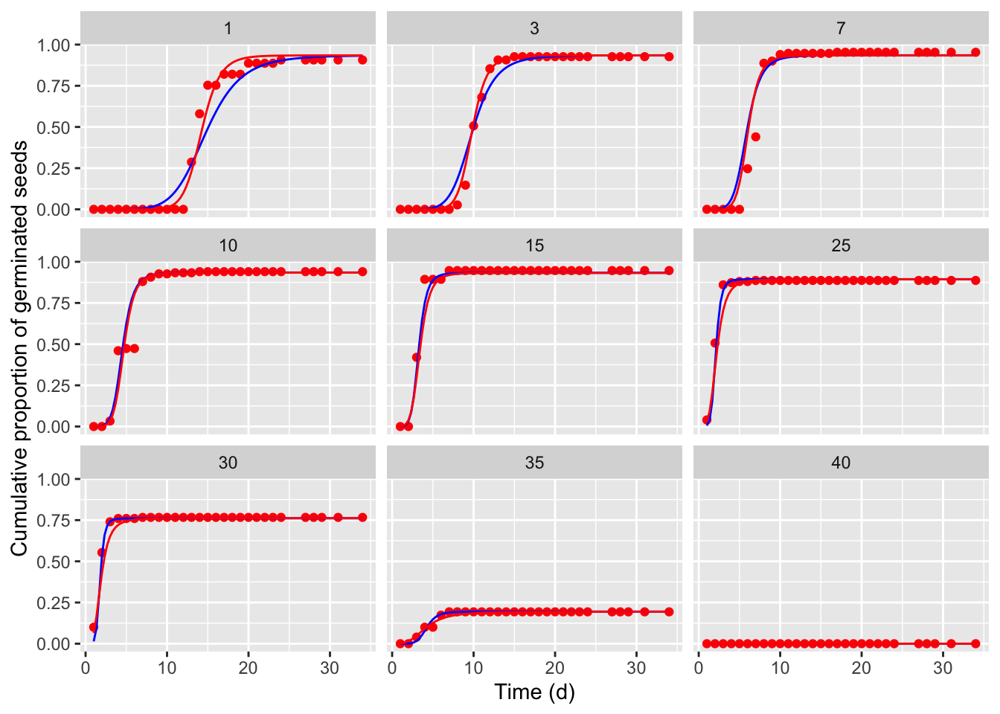

Section 11 Examples and case-studies
11.1 Fitting hydro-thermal-time-models to seed germination data
This dataset was obtained from previously published work (Mesgaran et al., 2017) with Hordeum spontaneum [C. Koch] Thell. The germination assay was conducted using four replicates of 20 seeds tested at six different water potential levels (0, −0.3, −0.6, −0.9, −1.2 and −1.5 MPa). Osmotic potentials were produced using variable amount of polyethylene glycol (PEG, molecular weight 8000) adjusted for the temperature level. Petri dishes were incubated at six constant temperature levels (8, 12, 16, 20, 24 and 28 °C), under a photoperiod of 12 h. Germinated seeds (radicle protrusion > 3 mm) were counted and removed daily for 20 days.
This dataset is available as hordeum in the drcSeedGerm package, which needs to be installed from github (see below), together the package drcte, which is necessary to fit time-to-event models. The following code loads the necessary packages, loads the dataset rape and shows the first six lines.
# Installing packages (only at first instance)
# library(devtools)
# install_github("OnofriAndreaPG/drcSeedGerm")
# install_github("OnofriAndreaPG/drcte")
library(drcSeedGerm)
library(tidyverse)
data(hordeum)
head(hordeum)
## temp water Dish timeBef timeAf nViable nSeeds nCum
## 1 8 -1.5 1 0 24 20 0 0
## 2 8 -1.5 1 24 48 20 0 0
## 3 8 -1.5 1 48 72 20 0 0
## 4 8 -1.5 1 72 96 20 0 0
## 5 8 -1.5 1 96 120 20 0 0
## 6 8 -1.5 1 120 144 20 1 111.1.1 Preliminary analyses
First of all, it is necessary to mention that this dataset was already analysed in Onofri et al. (2018; Example 2) by using the same methodology, although, in that paper, the R implementation was different (see Supplemental Material) and it is now outdated.
In the above data frame, ‘timeAf’ represents the moment when germinated seeds were counted, while ’timeBef’ represents the previous inspection time (or the beginning of the assay). The column ’nSeeds’ is the number of seeds that germinated during the time interval between ‘timeBef’ and ‘timeAf. The ’nCum’ column contains the cumulative number of germinated seeds and it is not necessary for time-to-event model fitting, although we can use it for plotting purposes.
hordeum <- hordeum %>%
mutate(propCum = nCum/nViable)
ggplot(data = hordeum, mapping = aes(timeAf, propCum)) +
geom_point() +
facet_grid(temp ~ water) +
scale_x_continuous(name = "Time (d)") +
scale_y_continuous(name = "Cumulative proportion of germinated seeds")
We see that the germination time-course is strongly affected by both temperature and water potential in the substrate and, consequently, our obvious interest is to model the effects of those environmental covariates. In our manuscript, we started from the idea that a parametric time-to-event curve is defined as a cumulative probability function (\(\Phi\)), with three parameters:
\[P(t) = \Phi \left( b, d, e \right)\] where \(P(t)\) is the cumulative probability of germination at time \(t\), \(e\) is the median germination time, \(b\) is the slope at the inflection point and \(d\) is the maximum germinated proportion. The most obvious extension is to allow for different \(b\), \(d\) and \(e\) values for each of the ith combinations of water potential (\(\Psi\)) and temperature level (\(T\)):
\[P(t, \Psi, T) = \Phi \left( b_i, d_i, e_i \right)\]
From the graph above, we see several ‘degenerated’ time-to-event curves, where no germinations occurred (e.g., see the graph at -1.5 MPa and 28°C). In order to avoid problems with those curves, we can use the drmte() function and set the separate = TRUE argument, so that the different curves are fitted independently of one another and the degenerated curves are recognised and skipped, without stopping the execution in R. In particular, where no time-course of events can be estimated, it is assumed that there is no progress to germination during the study-period and that the cumulative proportion of germinated seeds remains constant across that period. Consequently, the drmte() function resorts to fitting a simpler model, where the only \(d\) parameter is estimated (that is the maximum fraction of germinated seeds).
hordeum <- hordeum %>%
mutate(comb = factor( factor(water):factor(temp)))
mod1 <- drmte(nSeeds ~ timeBef + timeAf, data = hordeum,
curveid = comb, fct = loglogistic(),
separate = TRUE)
summary(mod1)
##
## Model fitted: Separate fitting of several time-to-event curves
##
## Robust estimation: no
##
## Parameter estimates:
##
## Estimate Std. Error t-value p-value
## b:-1.5:8 5.577670 0.671086 8.3114 < 2.2e-16 ***
## d:-1.5:8 0.705845 0.051801 13.6260 < 2.2e-16 ***
## e:-1.5:8 203.532986 8.746552 23.2701 < 2.2e-16 ***
## b:-1.5:12 4.036639 0.633750 6.3694 1.897e-10 ***
## d:-1.5:12 0.566163 0.061406 9.2201 < 2.2e-16 ***
## e:-1.5:12 232.198040 17.347102 13.3854 < 2.2e-16 ***
## b:-1.5:16 4.130712 1.174395 3.5173 0.0004359 ***
## d:-1.5:16 0.226248 0.057013 3.9683 7.238e-05 ***
## e:-1.5:16 293.584384 41.294139 7.1096 1.164e-12 ***
## d:-1.5:20 0.000000 0.000000 NaN NaN
## d:-1.5:24 0.000000 0.000000 NaN NaN
## d:-1.5:28 0.000000 0.000000 NaN NaN
## b:-1.2:8 4.761454 0.531157 8.9643 < 2.2e-16 ***
## d:-1.2:8 0.803436 0.044972 17.8653 < 2.2e-16 ***
## e:-1.2:8 152.794391 7.123662 21.4489 < 2.2e-16 ***
## b:-1.2:12 4.165847 0.518344 8.0368 9.050e-16 ***
## d:-1.2:12 0.667099 0.053329 12.5092 < 2.2e-16 ***
## e:-1.2:12 145.571114 8.562685 17.0006 < 2.2e-16 ***
## b:-1.2:16 3.848053 0.556564 6.9140 4.713e-12 ***
## d:-1.2:16 0.536017 0.057474 9.3262 < 2.2e-16 ***
## e:-1.2:16 175.692653 13.009048 13.5054 < 2.2e-16 ***
## b:-1.2:20 4.679284 1.377885 3.3960 0.0006838 ***
## d:-1.2:20 0.191881 0.049814 3.8520 0.0001172 ***
## e:-1.2:20 291.173467 34.870683 8.3501 < 2.2e-16 ***
## d:-1.2:24 0.000000 0.000000 NaN NaN
## d:-1.2:28 0.000000 0.000000 NaN NaN
## b:-0.9:8 5.237479 0.550871 9.5076 < 2.2e-16 ***
## d:-0.9:8 0.887920 0.035345 25.1218 < 2.2e-16 ***
## e:-0.9:8 111.384281 4.427060 25.1599 < 2.2e-16 ***
## b:-0.9:12 4.368990 0.475050 9.1969 < 2.2e-16 ***
## d:-0.9:12 0.850876 0.039968 21.2889 < 2.2e-16 ***
## e:-0.9:12 99.501087 4.833892 20.5841 < 2.2e-16 ***
## b:-0.9:16 3.581796 0.400722 8.9383 < 2.2e-16 ***
## d:-0.9:16 0.816041 0.043892 18.5922 < 2.2e-16 ***
## e:-0.9:16 105.233306 6.461986 16.2850 < 2.2e-16 ***
## b:-0.9:20 3.536663 0.502112 7.0436 1.874e-12 ***
## d:-0.9:20 0.572734 0.056895 10.0665 < 2.2e-16 ***
## e:-0.9:20 154.543645 11.924187 12.9605 < 2.2e-16 ***
## b:-0.9:24 3.113060 0.947598 3.2852 0.0010191 **
## d:-0.9:24 0.233165 0.062870 3.7087 0.0002084 ***
## e:-0.9:24 269.509412 55.515112 4.8547 1.206e-06 ***
## d:-0.9:28 0.000000 0.000000 NaN NaN
## b:-0.6:8 5.077994 0.538321 9.4330 < 2.2e-16 ***
## d:-0.6:8 0.900202 0.033548 26.8334 < 2.2e-16 ***
## e:-0.6:8 92.146203 3.725399 24.7346 < 2.2e-16 ***
## b:-0.6:12 5.564019 0.586966 9.4793 < 2.2e-16 ***
## d:-0.6:12 0.937528 0.027059 34.6476 < 2.2e-16 ***
## e:-0.6:12 74.982399 2.818636 26.6024 < 2.2e-16 ***
## b:-0.6:16 4.144136 0.458813 9.0323 < 2.2e-16 ***
## d:-0.6:16 0.837853 0.041271 20.3014 < 2.2e-16 ***
## e:-0.6:16 75.109147 3.897277 19.2722 < 2.2e-16 ***
## b:-0.6:20 4.399408 0.510297 8.6213 < 2.2e-16 ***
## d:-0.6:20 0.725331 0.049946 14.5224 < 2.2e-16 ***
## e:-0.6:20 83.735884 4.468212 18.7404 < 2.2e-16 ***
## b:-0.6:24 3.269465 0.443121 7.3783 1.603e-13 ***
## d:-0.6:24 0.607528 0.055700 10.9071 < 2.2e-16 ***
## e:-0.6:24 125.859897 9.985513 12.6042 < 2.2e-16 ***
## b:-0.6:28 2.959772 0.767672 3.8555 0.0001155 ***
## d:-0.6:28 0.265633 0.059199 4.4871 7.220e-06 ***
## e:-0.6:28 233.440197 40.981613 5.6962 1.225e-08 ***
## b:-0.3:8 6.489283 0.700089 9.2692 < 2.2e-16 ***
## d:-0.3:8 0.962474 0.021243 45.3069 < 2.2e-16 ***
## e:-0.3:8 72.248403 2.326579 31.0535 < 2.2e-16 ***
## b:-0.3:12 5.571444 0.614984 9.0595 < 2.2e-16 ***
## d:-0.3:12 0.962476 0.021243 45.3075 < 2.2e-16 ***
## e:-0.3:12 56.804335 2.154440 26.3662 < 2.2e-16 ***
## b:-0.3:16 3.759741 0.406837 9.2414 < 2.2e-16 ***
## d:-0.3:16 0.925252 0.029452 31.4157 < 2.2e-16 ***
## e:-0.3:16 53.997403 3.004606 17.9715 < 2.2e-16 ***
## b:-0.3:20 3.455788 0.382078 9.0447 < 2.2e-16 ***
## d:-0.3:20 0.863032 0.038527 22.4004 < 2.2e-16 ***
## e:-0.3:20 56.589306 3.525940 16.0494 < 2.2e-16 ***
## b:-0.3:24 3.219012 0.384905 8.3631 < 2.2e-16 ***
## d:-0.3:24 0.739176 0.049321 14.9869 < 2.2e-16 ***
## e:-0.3:24 72.448658 5.145402 14.0803 < 2.2e-16 ***
## b:-0.3:28 3.384884 0.449578 7.5290 5.110e-14 ***
## d:-0.3:28 0.591722 0.055517 10.6583 < 2.2e-16 ***
## e:-0.3:28 111.482975 8.597283 12.9672 < 2.2e-16 ***
## b:0:8 8.055166 0.890908 9.0415 < 2.2e-16 ***
## d:0:8 0.962496 0.021229 45.3391 < 2.2e-16 ***
## e:0:8 64.579539 1.810276 35.6739 < 2.2e-16 ***
## b:0:12 4.597148 0.515642 8.9154 < 2.2e-16 ***
## d:0:12 0.962502 0.021236 45.3239 < 2.2e-16 ***
## e:0:12 45.258150 2.124034 21.3076 < 2.2e-16 ***
## b:0:16 4.519281 0.504988 8.9493 < 2.2e-16 ***
## d:0:16 0.937575 0.027033 34.6821 < 2.2e-16 ***
## e:0:16 41.805944 2.052607 20.3672 < 2.2e-16 ***
## b:0:20 3.833745 0.419743 9.1335 < 2.2e-16 ***
## d:0:20 0.925095 0.029446 31.4163 < 2.2e-16 ***
## e:0:20 43.588297 2.434550 17.9040 < 2.2e-16 ***
## b:0:24 4.103341 0.467512 8.7770 < 2.2e-16 ***
## d:0:24 0.875057 0.036978 23.6641 < 2.2e-16 ***
## e:0:24 47.161280 2.550713 18.4894 < 2.2e-16 ***
## b:0:28 2.895784 0.341099 8.4896 < 2.2e-16 ***
## d:0:28 0.764633 0.047737 16.0176 < 2.2e-16 ***
## e:0:28 63.034588 4.939641 12.7610 < 2.2e-16 ***
## ---
## Signif. codes: 0 '***' 0.001 '**' 0.01 '*' 0.05 '.' 0.1 ' ' 111.1.2 A better modelling approach
The previous approach is clearly sub-optimal, as the temperature and water potential levels are regarded as factors, i.e. as nominal classes with no intrinsic orderings and distances. It would be much better to recognise that temperature and water potential are continuous variables and, consequently, code a time-to-event model where the three parameters are expressed as continuous functions of \(\Psi\) and \(T\):
\[P(t, \Psi, T) = \Phi \left[ b(\Psi, T), d(\Psi, T), e(\Psi, T) \right]\]
In the above mentioned manuscript (Onofri et al., 2018; example 2) we used a log-logistic cumulative distribution function:
\[P(t, \Psi, T) = \frac{ d(\Psi, T) }{1 + \exp \left\{ b \left[ \log(t) - \log( e(\Psi, T) ) \right] \right\} }\]
Considering that the germination rate is the inverse of germination time, we replaced \(e(\Psi, T) = 1/GR_{50}(\Psi, T)\) and used the following sub-models:
\[d(\Psi, T) = \textrm{max} \left\{ G \, \left[ 1 - \exp \left( \frac{ \Psi - \Psi_b - k(T - T_b )}{\sigma_{\Psi_b}} \right) \right]; 0 \right\}\]
\[GR_{50}(\Psi, T) = \textrm{max} \left\{ \frac{T - T_b }{\theta_{HT}} \left[\Psi - \Psi_b - k(T - T_b )\right]; 0 \right\}\] Please, note that the shape parameter \(b\) has been regarded as independent from the environmental covariates. It may be useful to note that the the parameters are:
- \(\Psi_{b}\), that is the median base water potential in the seed lot,
- \(T_{b}\), that is the base temperature for germination,
- \(\theta_HT\), that is the hydro-thermal-time parameter,
- \(\sigma_{\Psi_b}\), that represents the variability of \(\Psi_b\) within the population,
- \(G\), that is the germinable fraction, accounting for the fact that \(d\) may not reach 1, regardless of time and water potential.
- \(k\) and \(b\) that are parameters of shape.
You can get more information from our original paper (Onofri et al., 2018). This hydro-thermal-time model was implemented in R as the HTTEM() function, and it is available within the drcSeedGerm package; we can fit it by using the drmte() function in the drcte package, but we need to provide starting values for model parameters, because the self-starting routine is not yet available. Finally, the summary() method can be used to retrieve the parameter estimates.
# Complex model and slow fitting
modHTTE <- drmte(nSeeds ~ timeBef + timeAf + water + temp,
data=hordeum,
fct = HTTEM(),
start=c(0.8,-2, 0.05, 3, 0.2, 2000, 0.5))
summary(modHTTE, robust = T, units = Dish)
##
## Model fitted: Hydro-thermal-time-model (Mesgaran et al., 2017)
##
## Robust estimation: Cluster robust sandwich SEs
##
## Parameter estimates:
##
## Estimate Std. Error t value Pr(>|t|)
## G:(Intercept) 9.8820e-01 1.1576e-02 85.3692 <2e-16 ***
## Psib:(Intercept) -2.9133e+00 3.4812e-02 -83.6874 <2e-16 ***
## kt:(Intercept) 7.4228e-02 1.2666e-03 58.6015 <2e-16 ***
## Tb:(Intercept) -7.4525e-01 3.5254e-01 -2.1139 0.0346 *
## sigmaPsib:(Intercept) 5.5284e-01 2.8976e-02 19.0790 <2e-16 ***
## ThetaHT:(Intercept) 1.3091e+03 4.0638e+01 32.2130 <2e-16 ***
## b:(Intercept) 4.1650e+00 1.1332e-01 36.7548 <2e-16 ***
## ---
## Signif. codes: 0 '***' 0.001 '**' 0.01 '*' 0.05 '.' 0.1 ' ' 1It is always important not to neglect a graphical inspection of model fit. The plot() method does not work with time-to-event curves with additional covariates (apart from time). However, we can retrieve the fitted data by using the plotData() function and use those predictions within the ggplot() function. The box below shows the appropriate coding.
tab <- plotData(modHTTE)
ggplot() +
geom_point(data = tab$plotPoints, mapping = aes(x = timeAf, y = CDF),
col = "red") +
geom_line(data = tab$plotFits, mapping = aes(x = timeAf, y = CDF)) +
facet_grid(temp ~ water) +
scale_x_continuous(name = "Time (d)") +
scale_y_continuous(name = "Cumulative proportion of germinated seeds")
11.1.3 Other HTT models
Mohsen Mesgaran, in an earlier paper (Mesgaran et al., 2017), used a different modelling approach, where he did not directly consider the distribution of germination times within the seed lot, but modelled the distribution of base water potential levels within the lot, under the idea that different germination times arise as the result of the fact that each seed has its ‘intrinsic’ water potential level (Bradford, 1992). We do not give any further biological detail, because this is only meant to be a post about R coding; you can refer to Bradford (1992), Mesgaran et al. (2013) and Mesgaran et al. (2017) for this detail. The following equation describes the time-course of germination depending on temperature and water potential level, assuming that the distribution of base water potential in the seed lot is gaussian:
\[ P(t, T, \Psi) = \Phi \left\{ \frac{\Psi - \left[ \frac{\theta_{HT}}{t (T - T_b)} \right] - \left[\Psi_b + K_t (T - T_b) \right] }{\sigma_{\Psi_b}} \right\} \quad \quad (\textrm{HTTnorm.M})\]
where \(P\) is the proportion of germinated seeds, depending on the time \(t\), temperature \(T\) and base water potential \(\Psi\), \(\Phi\) is a gaussian cumulative distribution function, \(\theta_HT\) is the hydro-thermal-time parameter, \(\Psi_{b}\) is the median base water potential in the seed lot, \(K_t\) is a parameter that measures the effect of temperature on base water potential, \(T_{b}\) is the base temperature for germination and \(\sigma_{\Psi_b}\) represents the variability of \(\Psi_b\) within the population.
This model was coded in the drcSeedGerm package as the HTTnorm.M() function, which was also modified to fit alternative biological assumptions. For example, if \(\Phi\) is not gaussian, but it is log-logistic, the model becomes:
\[ P(t, T, \Psi) = \frac{1}{1 + \exp \left\{ - \frac{ \log \left[ \Psi - \left( \frac{\theta_{HT}}{t ( T - T_b )} \right) + \delta \right] - \log \left[ \Psi_b + K_t (T - T_b) + \delta \right] }{\sigma_{\Psi_b}} \right\} } \quad \quad (\textrm{HTTLL.M})\]
where \(\delta\) is a shifting parameter, to allow for negative water potential levels. This model was coded in the drcSeedGerm package as the HTTLL.M() function.
In both models the term \(K_T(T - T_b)\) can be modified as \(K_t[max(T,T_o) - T_o]\), which changes the way how the germination rate is affected by increasing temperature levels. In the two modified models, the optimal temperature \(T_o\) is included as an explicit parameter; the corresponding R functions are HTTnorm.BS() and HTTLL.BS().
Let’s fit these four models.
# HTTnorm.M
modHTTnorm.M <- drmte(nSeeds ~ timeBef + timeAf + water + temp,
data=hordeum,
fct = HTTnorm.M(),
start=c(932,-2.5, -3, 0.07, 0.5))
summary(modHTTnorm.M)
##
## Model fitted: Hydrothermal-time model with normal distribution of Psib (Bradford et al., 2002)
##
## Robust estimation: no
##
## Parameter estimates:
##
## Estimate Std. Error t-value p-value
## thetaHT:(Intercept) 850.5394623 33.7608043 25.1931 <2e-16 ***
## Tb:(Intercept) 0.5713169 0.3710553 1.5397 0.1236
## Psib50:(Intercept) -2.3777692 0.0385119 -61.7412 <2e-16 ***
## Kt:(Intercept) 0.0738569 0.0020037 36.8600 <2e-16 ***
## sigmaPsib:(Intercept) 0.4049049 0.0094797 42.7130 <2e-16 ***
## ---
## Signif. codes: 0 '***' 0.001 '**' 0.01 '*' 0.05 '.' 0.1 ' ' 1
# HTTnorm.BS
modHTTnorm.BS <- drmte(nSeeds ~ timeBef + timeAf + water + temp,
data=hordeum,
fct = HTTnorm.BS(),
start=c(932,-2.5, 15, -3, 0.07, 0.5))
summary(modHTTnorm.BS)
##
## Model fitted: Hydrothermal-time model with normal distribution of Psib (Bradford et al., 2002)
##
## Robust estimation: no
##
## Parameter estimates:
##
## Estimate Std. Error t-value p-value
## thetaHT:(Intercept) 906.3324894 43.7165251 20.7320 <2e-16 ***
## Tb:(Intercept) -0.2197905 0.5362506 -0.4099 0.6819
## To:(Intercept) 9.2700969 0.4781515 19.3874 <2e-16 ***
## Psib50:(Intercept) -1.7649662 0.0357594 -49.3567 <2e-16 ***
## Kt:(Intercept) 0.0755795 0.0021308 35.4696 <2e-16 ***
## sigmaPsib:(Intercept) 0.4042633 0.0094506 42.7767 <2e-16 ***
## ---
## Signif. codes: 0 '***' 0.001 '**' 0.01 '*' 0.05 '.' 0.1 ' ' 1
# HTTLL.M
modHTTLL.M <- drmte(nSeeds ~ timeBef + timeAf + water + temp,
data=hordeum,
fct = HTTLL.M(),
start=c(832,-2.5, -3, 0.07, 3, 0.5))
summary(modHTTLL.M)
##
## Model fitted: Hydrothermal-time model (Mesgaran et al., 2017)
##
## Robust estimation: no
##
## Parameter estimates:
##
## Estimate Std. Error t-value p-value
## thetaHT:(Intercept) 942.3812703 41.8239049 22.5321 < 2.2e-16 ***
## Tb:(Intercept) -0.6678997 0.4900833 -1.3628 0.1729
## Psib50:(Intercept) -2.4978431 0.0383909 -65.0635 < 2.2e-16 ***
## Kt:(Intercept) 0.0732105 0.0020206 36.2313 < 2.2e-16 ***
## delta:(Intercept) 3.4981909 0.2535617 13.7962 < 2.2e-16 ***
## sigmaPsib:(Intercept) 0.1038773 0.0131166 7.9195 2.414e-15 ***
## ---
## Signif. codes: 0 '***' 0.001 '**' 0.01 '*' 0.05 '.' 0.1 ' ' 1
# HTTLL.BS
modHTTLL.BS <- drmte(nSeeds ~ timeBef + timeAf + water + temp,
data=hordeum,
fct = HTTLL.BS(),
start=c(932,-2.5, 15, -3, 0.07, 3, 0.5))
summary(modHTTLL.BS)
##
## Model fitted: Hydrothermal-time model (Mesgaran et al., 2017)
##
## Robust estimation: no
##
## Parameter estimates:
##
## Estimate Std. Error t-value p-value
## thetaHT:(Intercept) 1.4770e+03 8.7763e+01 16.8292 < 2.2e-16 ***
## Tb:(Intercept) -7.8060e+00 1.1189e+00 -6.9765 3.027e-12 ***
## To:(Intercept) 1.3159e+01 3.5960e-01 36.5937 < 2.2e-16 ***
## Psib50:(Intercept) -1.6545e+00 1.9710e-02 -83.9418 < 2.2e-16 ***
## Kt:(Intercept) 8.7877e-02 3.8001e-03 23.1247 < 2.2e-16 ***
## delta:(Intercept) 2.6333e+00 9.6670e-02 27.2400 < 2.2e-16 ***
## sigmaPsib:(Intercept) 1.8527e-01 1.6898e-02 10.9641 < 2.2e-16 ***
## ---
## Signif. codes: 0 '***' 0.001 '**' 0.01 '*' 0.05 '.' 0.1 ' ' 1The AIC value tells us that, for this dataset, the HTTLL.BS() function produced the best fit, confirming its underlying biological assumptions.
AIC(modHTTE, modHTTnorm.M, modHTTnorm.BS, modHTTLL.M, modHTTLL.BS)
## df AIC
## modHTTE 3017 14714.05
## modHTTnorm.M 3019 14737.48
## modHTTnorm.BS 3018 14728.87
## modHTTLL.M 3018 14582.64
## modHTTLL.BS 3017 14548.5811.2 Fitting thermal-time-models to seed germination data
11.2.1 A motivating examples
In recent times, we wanted to model the effect of temperature on seed germination for Hordeum vulgare and we made an assay with three replicated Petri dishes (50 seeds each) at 9 constant temperature levels (1, 3, 7, 10, 15, 20, 25, 30, 35, 40 °C). Germinated seeds were counted and removed daily for 10 days. This unpublished dataset is available as barley in the drcSeedGerm package, which needs to be installed from github (see below), together with the drcte package for time-to-event model fitting. The following code loads the necessary packages, loads the datasets and shows the first six lines.
# Installing packages (only at first instance)
# library(devtools)
# install_github("OnofriAndreaPG/drcSeedGerm")
# install_github("OnofriAndreaPG/drcte")
library(drcSeedGerm)
library(tidyverse)
data(barley)
head(barley)
## Dish Temp timeBef timeAf nSeeds nCum propCum
## 1 1 1 0 1 0 0 0
## 2 1 1 1 2 0 0 0
## 3 1 1 2 3 0 0 0
## 4 1 1 3 4 0 0 0
## 5 1 1 4 5 0 0 0
## 6 1 1 5 6 0 0 0In this dataset, ‘timeAf’ represents the moment when germinated seeds were counted, while ’timeBef’ represents the previous inspection time (or the beginning of the assay). The column ’nSeeds’ is the number of seeds that germinated during each time interval between ‘timeBef’ and ‘timeAf. For the analyses, we will also make use of the ’Temp’ (temperature) and ‘Dish’ (Petri dish) columns.
This dataset was already analysed in Onofri et al. (2018; Example 3 and 4) by using the same methodology, but a different R coding (see the Supplemental Material in that paper), that is now outdated. This post will show you the updated coding.
11.2.2 A first thermal-time model
As we have shown in previous posts (see here and here), the effect of environmental covariates (temperature, in this case) can be simply included by independently coding a different time-to-event curve to each level of that covariate. In other words, considering that a parametric time-to-event curve is defined as a cumulative probability function (\(\Phi\)), with three parameters:
\[P(t) = \Phi \left( b, d, e \right)\] where \(P(t)\) is the cumulative probability of germination at time \(t\), \(e\) is the median germination time, \(b\) is the slope at the inflection point and \(d\) is the maximum germinated proportion, the most obvious extension is to allow for different \(b\), \(d\) and \(e\) values for each of the ith temperature levels (\(T\)):
\[P(t, T) = \Phi \left( b_i, d_i, e_i \right)\] Although the above approach is possible, we will not purse it here, as it is clearly sub-optimal; indeed, such an approach wrongly considers the temperature as a factor, i.e. a set of nominal classes with no intrinsic orderings and distances. Obviosly, we should better regard the temperature as a continuous variable, by coding a time-to-event model where the three parameters are expressed as continuous functions of \(T\):
\[P(t, T) = \Phi \left[ b(T), d(T), e(T) \right]\]
For the ‘phalaris’ dataset (Onofri et al., 2018; example 3) we used a log-logistic cumulative distribution function, with the following sub-models:
\[ \left\{ {\begin{array}{{l}} P(t, T) = \frac{ d(T) }{1 + \exp \left\{ b \left[ \log(t) - \log( e(T) ) \right] \right\} } \\ d(T) = G \, \left[ 1 - \exp \left( - \frac{ T_c - T }{\sigma_{T_c}} \right) \right] \\ 1/[e(T)] = GR_{50}(T) = \frac{T - T_b }{\theta_T} \left[1 - \frac{T - T_b}{T_c - T_b}\right] \\ \end{array}} \right. \quad \quad (\textrm{TTEM})\]
Please, note that the shape parameter \(b\) has been regarded as independent from temperature; the parameters are:
- \(G\), that is the germinable fraction, accounting for the fact that \(d\) may not reach 1, regardless of time and temperature;
- \(T_c\), that is the ceiling temperature for germination;
- \(\sigma_{T_c}\), that represents the variability of \(T_c\) within the seed lot;
- \(T_b\), that is the base temperature for germination;
- \(\theta_T\), that is the thermal-time parameter;
- \(b\), that is the scale parameters for the log-logistic distribution.
You can get more information from our original paper (Onofri et al., 2018). This thermal-time model was implemented in R as the TTEM() function, and it is available within the drcSeedGerm package; we can fit it by using the drmte() function in the drcte package, with no need to provide starting values for model parameters, because a self-starting routine is available. The summary() method can be used to retrieve the parameter estimates.
# Thermal-Time-to-event model fit
modTTEM <- drmte( nSeeds ~ timeBef + timeAf + Temp, data=barley,
fct=TTEM())
summary(modTTEM, units = Dish)
##
## Model fitted: Thermal-time model with shifted exponential for Pmax and Mesgaran model for GR50
##
## Robust estimation: Cluster robust sandwich SEs
##
## Parameter estimates:
##
## Estimate Std. Error t value Pr(>|t|)
## G:(Intercept) 12.46391 2.40502 5.1825 2.772e-07 ***
## Tc:(Intercept) 82.66899 23.47042 3.5223 0.000452 ***
## sigmaTc:(Intercept) 1018.92708 322.67791 3.1577 0.001649 **
## Tb:(Intercept) -1.89327 0.38741 -4.8870 1.236e-06 ***
## ThetaT:(Intercept) 43.41025 4.37185 9.9295 < 2.2e-16 ***
## b:(Intercept) 5.62759 0.69149 8.1383 1.520e-15 ***
## ---
## Signif. codes: 0 '***' 0.001 '**' 0.01 '*' 0.05 '.' 0.1 ' ' 1It is always important not to neglect a graphical inspection of model fit. The plot() method does not work with time-to-event curves with additional covariates (apart from time). However, we can retrieve the fitted data by using the plotData() function and use those predictions within the ggplot() function. The box below shows the appropriate coding; the red circles in the graphs represent the observed means, while the black lines are model predictions).
tab <- plotData(modTTEM)
ggplot() +
geom_point(data = tab$plotPoints, mapping = aes(x = timeAf, y = CDF),
col = "red") +
geom_line(data = tab$plotFits, mapping = aes(x = timeAf, y = CDF)) +
facet_wrap( ~ Temp) +
scale_x_continuous(name = "Time (d)") +
scale_y_continuous(name = "Cumulative proportion of germinated seeds")
The previous graph shows that the TTEM() model, that we had successfully used with other datasets, failed to provide an adequate description of the germination time-course for barley. Therefore, we modified one of the sub-models, by adopting the approach highlighted in Rowse and Finch-Savage (2003), where:
\[1/[e(T)] = GR_{50}(T) = \left\{ {\begin{array}{ll} \frac{T - T_b}{\theta_T} & \textrm{if} \,\,\, T_b < T < T_d \\ \frac{T - T_b}{\theta_T} \left[ 1 - \frac{T - T_d}{T_c - T_d} \right] & \textrm{if} \,\,\, T_d < T < T_c \\ 0 & \textrm{if} \,\,\, T \leq T_b \,\,\, or \,\,\, T \geq T_c \end{array}} \right. \]
Furthermore, we also made a further improvement, by coding another model where also the \(b\) parameter was allowed to change with temperature, according to the following equation:
\[ \sigma(T) = \frac{1}{b(T)} = \frac{1}{b_0} + s (T - T_b)\]
These two improved models were coded as the TTERF() function (with the only change in the ‘e’ submodel), and as the TTERFc() function (with a change in both the ‘b’ and ‘e’ submodels), which are available within the drcSeedGerm package. The code below is used to fit both models and explore the resulting fits: the symbols show the observed means, the blue line represents the ‘TTERF’ fit and the red line represents the ‘TTERFc’ fit.
modTTERF <- drmte( nSeeds ~ timeBef + timeAf + Temp, data=barley,
fct=TTERF())
modTTERFc <- drmte(nSeeds ~ timeBef + timeAf + Temp, data=barley,
fct=TTERFc())
AIC(modTTEM, modTTERF, modTTERFc)
## df AIC
## modTTEM 804 6478.917
## modTTERF 803 5730.622
## modTTERFc 802 5602.532
tab2 <- plotData(modTTERF)
tab3 <- plotData(modTTERFc)
ggplot() +
geom_point(data = tab$plotPoints, mapping = aes(x = timeAf, y = CDF),
col = "red") +
geom_line(data = tab2$plotFits, mapping = aes(x = timeAf, y = CDF),
col = "blue") +
geom_line(data = tab3$plotFits, mapping = aes(x = timeAf, y = CDF),
col = "red") +
facet_wrap( ~ Temp) +
scale_x_continuous(name = "Time (d)") +
scale_y_continuous(name = "Cumulative proportion of germinated seeds")
We see that, with respect to the TTEM model, both the two improved models provide a better fit.
It should be clear that this modelling approach is rather flexible, by appropriately changing one or more submodels, and it can fit the germination pattern of several species in several environmental conditions.